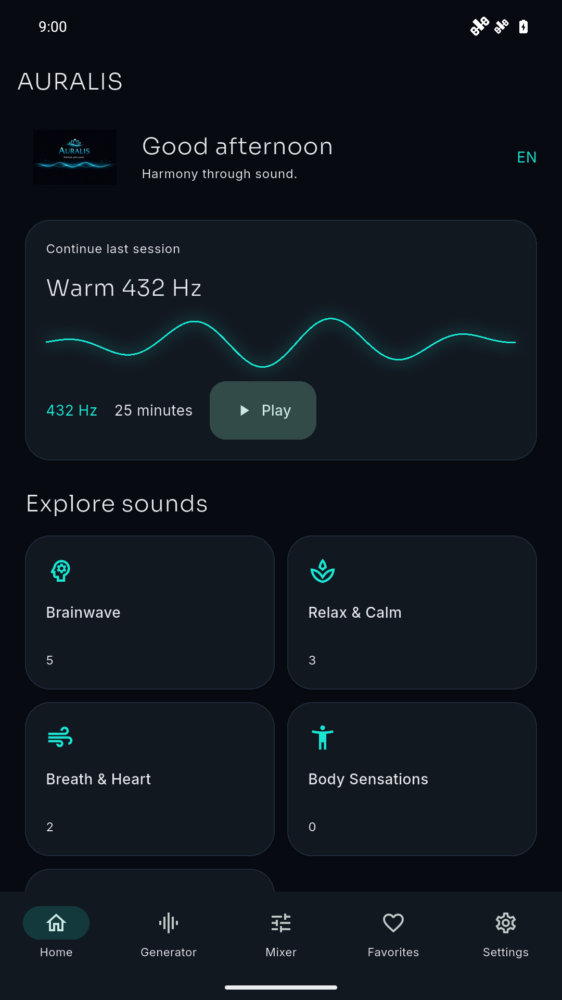
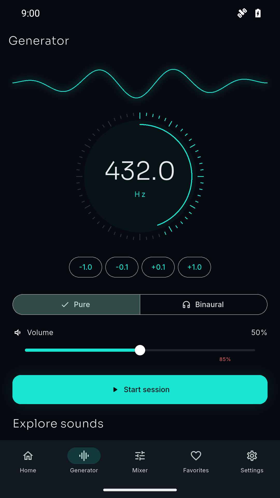
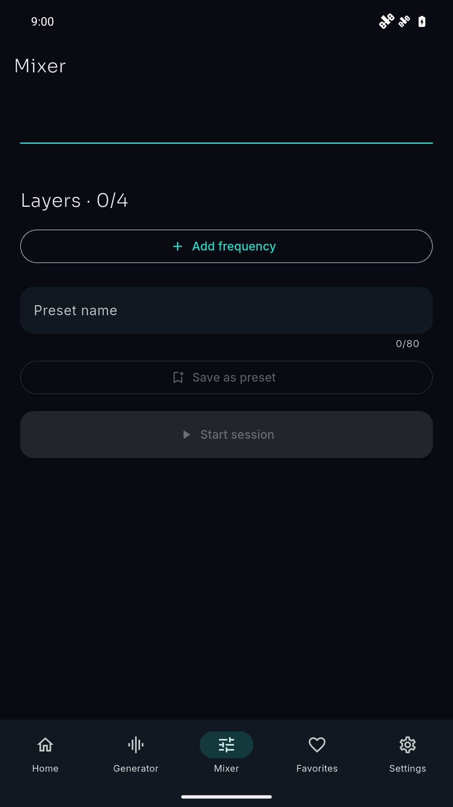
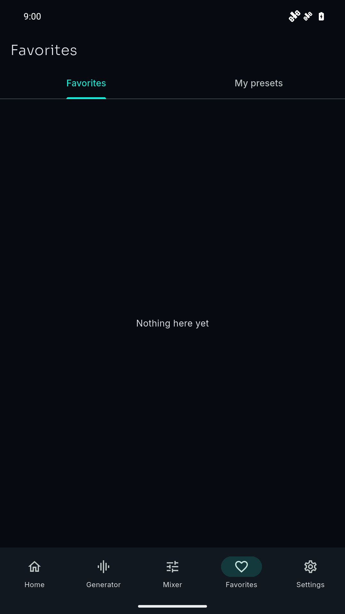
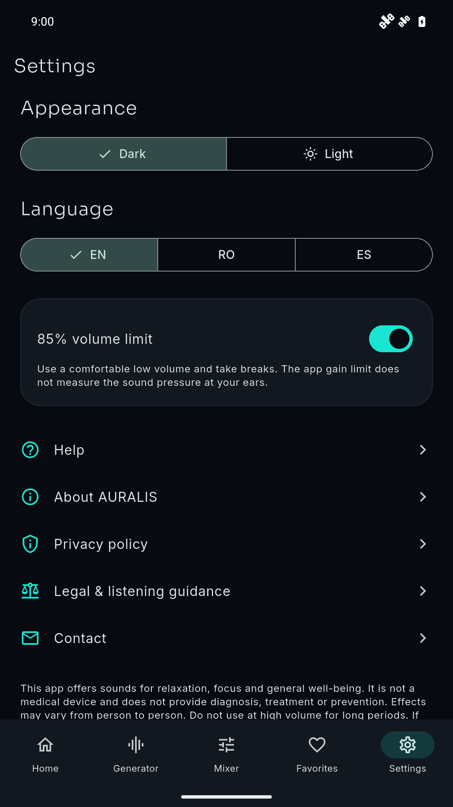

PRAXIS SCIENCE LAB / AURALIS
AURALIS
Offline pure tones, binaural sound sessions and a four-layer mixer.
In testing Version 0.1.0. Not yet available on Google Play, Huawei AppGallery or the App Store.
AURALIS brings pure tones and binaural sound sessions together in an offline listening app.
Choose from 16 catalog sounds or adjust a pure tone from 20 to 20,000 Hz in 0.1 Hz steps. Binaural mode sends different tones to the left and right channels, using a 1–40 Hz difference and a 100–200 Hz carrier. Use stereo headphones for binaural listening; actual speaker and headphone output depends on your device.
Build a mix with up to four layers, adjust each volume, mute or remove layers, and save a named preset. Keep favorite sounds, rename or delete presets, and revisit your local session history.
Set sessions from 1 to 120 minutes, choose fade-in and fade-out, pause or stop playback, and continue listening with the screen locked. The app reminds you to take a break when a session ends. A volume limit is enabled by default; higher app volume requires confirmation. This limit does not measure sound pressure at your ears.
Use English, Romanian or Spanish, with Dark and Light themes. Preferences, favorites, saved mixes and history stay on your device. This version has no advertising, purchases, account or app backend.
This app offers sounds for relaxation, focus and general well-being. It is not a medical device and does not provide diagnosis, treatment or prevention. Effects may vary from person to person. Do not use at high volume for long periods. If you have hearing conditions, consult a specialist.
Inside AURALIS
Actual Android test-build captures, version 0.1.0. Screenshots use the Android demo status bar.





Platforms
Android variants are prepared for Google Play and Huawei AppGallery. iOS sources are included; Mac/Xcode and iPhone validation are pending. No store installation link is active.